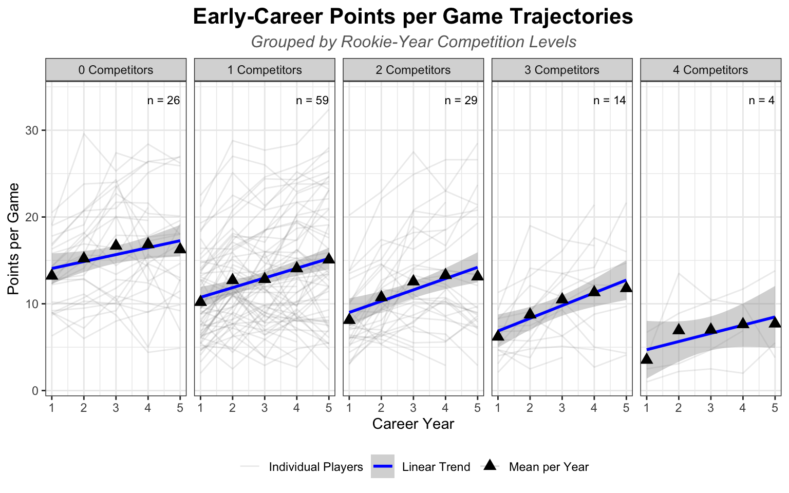
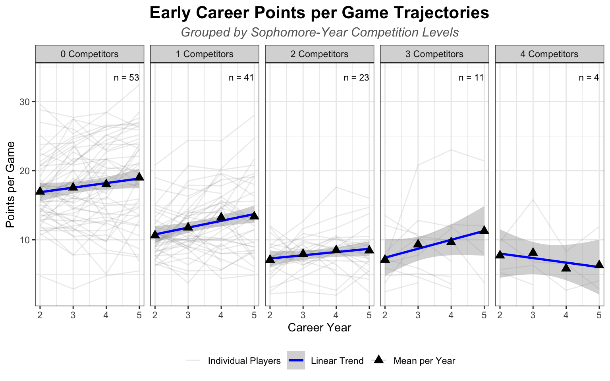
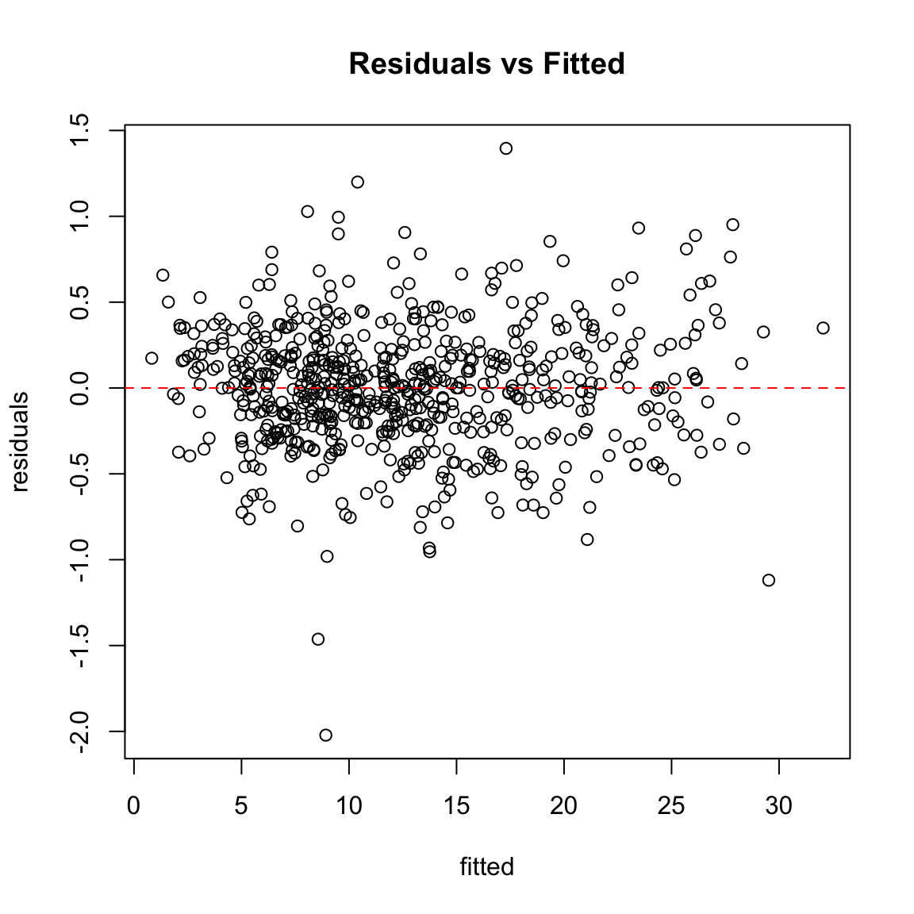
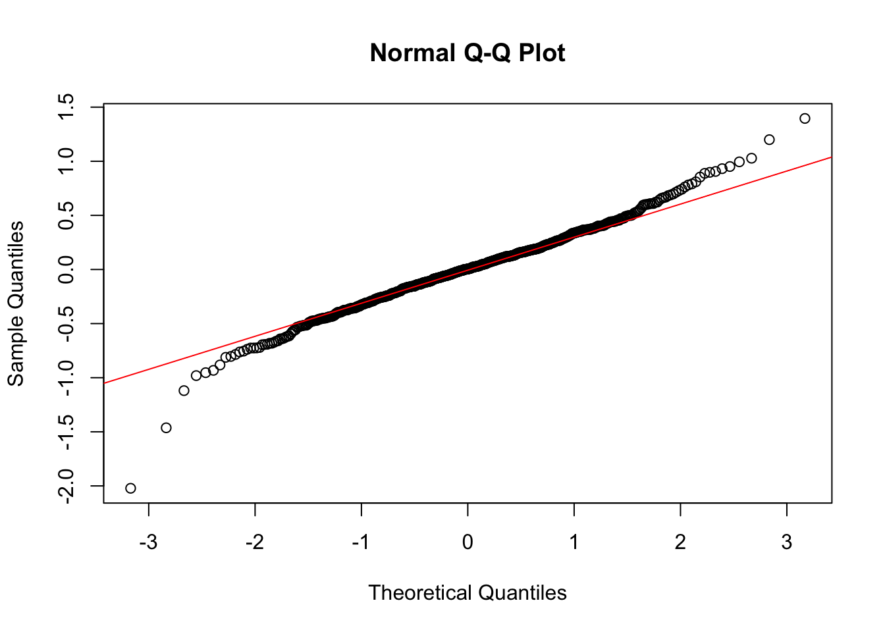
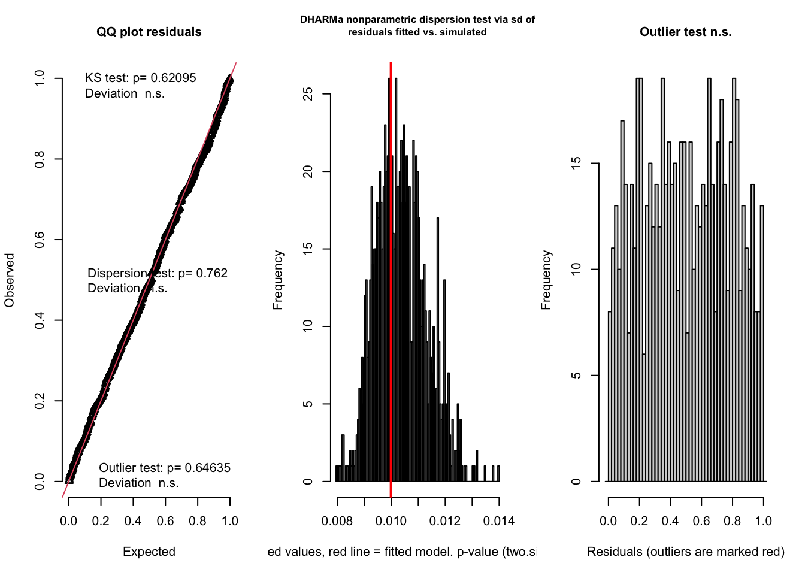
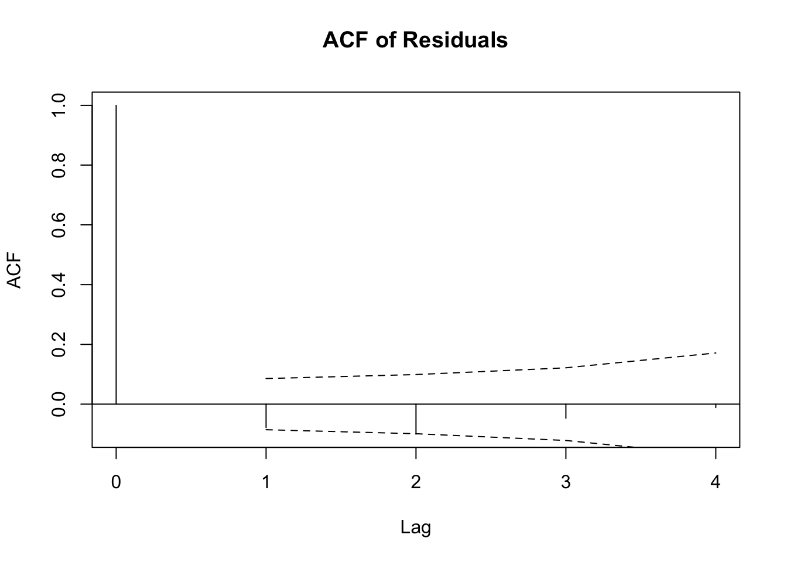
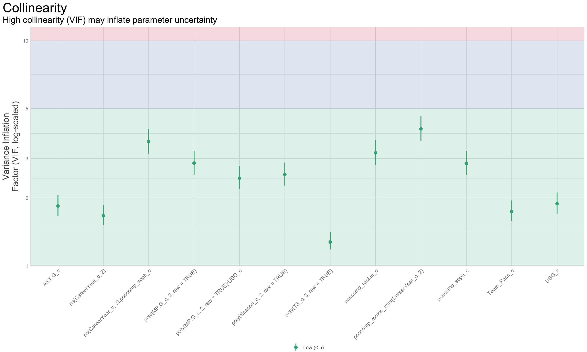
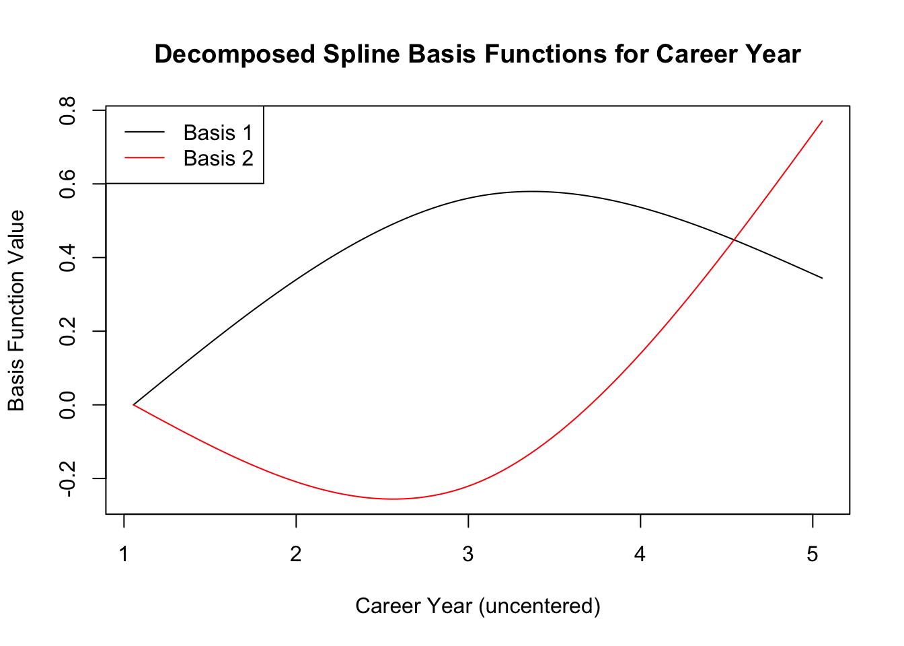

flowchart LR
A[Collect Player Data] --> B[Clean & Merge Data]
B --> C[Fit Initial LMM]
C --> D[Check Diagnostics]
D --> E[Refine Model]
E --> F[Visualize Results]
E --> D
NBA Early-Career Competition Analysis
Introduction
In the NBA, teams often face decisions about how to manage players at the same position. A familiar scenario arises when a team drafts a young, high-potential player despite already having an established player at the same position. This raises the question: does having a more experienced teammate in the same role limit opportunities for the rookie or sophomore, or shape their early development?
This project examines how positional competition during a player’s rookie and sophomore seasons influences scoring development over the first five years of their career. Positional competition is defined as the number of teammates at the same position who have more experience and play comparable minutes to the focal player.
The analysis focuses on NBA lottery picks (drafted 1–14) from 2010–2020. I collected each player’s regular-season points per game (PTS.G) over their first five seasons. To account for repeated measurements within players, I used a linear mixed-effects model (LMM), which combines fixed effects (overall trends) with random effects (player-specific deviations).
Overview
The analysis focuses on three core measures:
Rookie-year competition: Experienced players at the same position during Year 1.
Sophomore-year competition: Experienced players at the same position during Year 2.
Outcome: Average points per game (
PTS.G) across the first five seasons.
Methods & Approach
Data Preparation: Collected data with Python (
requests,BeautifulSoup), then cleaned and organized it withpandasanddplyrin R.Linear Mixed-Effects Model: Modeled scoring trajectories using fixed effects, player-level random effects, and splines (piecewise polynomial functions) to capture nonlinear growth.
Key Findings & Visualizations: Evaluated model reliability with robust confidence intervals and diagnostic checks, and visualized effects with coefficient and interaction plots.
Modeling Flow Chart
Takeaways
Players facing more competition in their sophomore year tend to have flatter or declining scoring trajectories after Year 3.
Rookie-year competition has little effect on growth trajectories but slightly increases baseline scoring.
Even after controlling for minutes, usage, efficiency, and team context, early-career competition has a subtle but detectable effect on scoring development.
Data Preparation
Player and career data were collected through a Python web-scraping pipeline built with the requests and BeautifulSoup libraries, then cleaned and merged with pandas before being imported into R for additional data cleaning and analysis.
Players were evaluated over their first five active NBA seasons, defined as seasons in which they appeared in at least one regular-season game. Seasons with no participation (e.g., due to injury) were excluded from the five-year span. Additionally, to reduce noise from seasons with minimal playing time, seasons where players logged fewer than 15 games were excluded from the analysis.
Additionally, for numerical stability and interpretability, all numeric predictors were centered and standardized prior to entry into the model, with the exception of Career Year, which was centered only.
Exploratory Data Analysis (EDA)
Before fitting the mixed model, it’s useful to visualize how scoring develops across a player’s early career and how it might relate to varying levels of positional competition.
Points per Game Trajectories
- Observation: Average points per game (
PTS.G) increases slightly over the first five years, but individual trajectories vary considerably, highlighting the need for mixed-effects modeling.
Grouping by Competition

- Observation: More rookie-year competitors is associated with slightly lower baseline PTS.G, but growth slopes appear similar across groups. Results for higher competition groups are less stable due to smaller sample sizes (n). The per-year averages may suggest early-career scoring growth is nonlinear.

- Observation: Players with no sophomore competitors show the highest average
PTS.G. Slopes vary across groups with no distinguishable relationship between competition and trajectory. As noted earlier, estimates for higher competition groups should be interpreted cautiously, and scoring growth may not be linear within each group.
Linear Mixed-Effects Model
Having examined rookie- and sophomore-year competition effects descriptively through trajectory plots, the next step is to formally test these relationships using linear mixed-effects models (LMMs).
The purpose of the mixed model is to account for the fact that there are repeated measures for each player. A simple linear regression would assume all players share the same error variance, which is unrealistic given that players differ systematically in their scoring trajectories, as the descriptive plots already suggested.
An additional advantage of linear mixed models is their ability to handle unbalanced data. This is particularly relevant here, since not all players in the dataset remain in the league through Year 5.
Intercept Only Model
As a starting point, I fit a simple intercept-only model with random intercepts for players. This baseline model estimates the overall average points per game (PTS.G) while capturing how each player deviates from that average.
# Fit random intercept model
null_model <- lmer(PTS.G ~ (1 | Player), data = player_data, REML = FALSE)
icc(null_model)# Intraclass Correlation Coefficient
Adjusted ICC: 0.704
Unadjusted ICC: 0.704The Intraclass Correlation Coefficient (ICC) from this model indicates that roughly 70% of the total variance in points per game is attributable to between-player differences, providing a strong justification for the mixed-effects approach.
Variables of Interest
Building on the null model, I included Career Year (CareerYear_c) as a fixed effect and evaluated whether slopes varied across players. Visualizations of player-level growth suggested some variability. However, once other predictors were added, including Career Year as a random effect did not improve model fit, so it was excluded in the final model.
I then added positional competition counts, poscomp_rookie_c and poscomp_soph_c (for rookie- and sophomore-year competition, respectively), as well as their interactions with Career Year. This allowed for testing whether early-career competition influences scoring levels or short-term growth trajectories.
Control Variables
To isolate the effects of early-career positional competition, I iteratively added key predictors shown to influence scoring. These included: minutes per game (MP.G_c), usage percentage (USG_c), true shooting percentage (TS_c), assists per game (AST.G_c), team pace (Team_Pace_c), and season effects (Season_c). Diagnostic checks were used throughout to assess model assumptions and detect potential nonlinearities or interactions.
Transformations and Interactions
Several nonlinearities were included in the model including polynomial terms for minutes played (MP.G_c), true shooting (TS_c), and season (Season_c). Additionally, natural cubic splines were introduced for Career Year (CareerYear_c) to flexibly capture nonlinear scoring trajectories across time without forcing a strict polynomial form.
An interaction between usage percentage and polynomial terms for minutes played was retained in the final model due to theoretical relevance and statistical significance, since playing time may amplify how usage percentage affects points per game. By contrast, an interaction between minutes and true shooting was not included because it introduced violations in residual normality, homoscedasticity, and independence.
Random Slopes for Player-Level Difference
Domain knowledge suggests that usage rate and true shooting affect scoring differently across players.
Some players convert efficiency (TS_c) directly into more points by taking high-value shots, while others take fewer shots or pass on opportunities. Usage (USG_c) is the proportion of team possessions ending with a player, but high usage does not always translate to more points; some players may favor low-percentage isolation attempts late in the shot clock, or turn the ball over.
Scatter plots with player-level regression lines (PTS.G ~ TS_c and PTS.G ~ USG_c) confirmed that both baseline scoring levels (intercepts) and relationships with efficiency and usage (slopes) varied across players. This motivated the use of a random-effects structure that allows each player to have their own slopes for TS_c and USG_c, along with an individual baseline scoring intercept:
PTS.G ~ (1 + TS_c + USG_c || Player)This allows each player to have their own baseline scoring and unique sensitivities to efficiency and usage.
Final Model
The final mixed-effects model estimates how rookie- and sophomore-year positional competition affects both baseline scoring and scoring growth, while adjusting for player- and team-level controls:
### Linear Mixed-Effects Model ###
fit_mixed <- lmer(PTS.G ~ poscomp_rookie_c*ns(CareerYear_c,2)
+ poscomp_soph_c*ns(CareerYear_c,2)
+ Team_Pace_c + AST.G_c
+ poly(TS_c,3,raw=TRUE) + poly(Season_c,2,raw=TRUE)
+ poly(MP.G_c,2,raw=TRUE)*USG_c
+ (1 + TS_c + USG_c || Player),
player_data)This model balances statistical performance and interpretability. It includes both fixed effects (competition, efficiency, usage, assists, pace, season) and random effects (player-level intercepts with slopes for usage and efficiency). In doing so, it models league-wide scoring trends while accounting for how individual players differ in converting efficiency and usage into points.
Model Diagnostics
To verify that the final linear mixed-effects model was well-specified, I checked the common assumptions of linearity, homoscedasticity, normality, independence, and multicollinearity.
Residuals vs. Fitted Values

Residuals are scattered around zero with no strong curvature, suggesting that the model adequately captures linearity in the conditional mean and variance is reasonably constant (homoscedasticity).
Normality of Residuals

To assess residual normality, I inspected a Q–Q plot of the standardized residuals. The residuals show some deviations at the tails, suggesting they are not perfectly normally distributed.

To supplement this, I used the DHARMa package, which tests residual uniformity rather than normality. The results indicate that the residuals are consistent with the expected distribution under the model, i.e. there is no evidence of model misspecification or biased inference.
Independence

Temporal autocorrelation of residuals was examined to ensure independence of errors across career years within players. A slight negative autocorrelation was observed between residuals two years apart (Lag 2), but the overall effect is small and unlikely to bias model estimates.
Multicollinearity

Variance inflation diagnostics show no evidence of multicollinearity among predictors.
Key Findings
Model diagnostics indicated that residuals deviate slightly from normality, especially at the tails. While estimates for linear mixed models are generally robust to such deviations, I decided to include bootstrapped 95% confidence intervals (CIs) to better capture uncertainty. Bootstrapping repeatedly resamples the data (with replacement) to generate a distribution of each estimate, then calculates a confidence interval from this distribution. This approach does not rely on the normality assumption and provides more reliable uncertainty estimates for the fixed effects.
| estimate | conf.low | conf.high | sig. | |
|---|---|---|---|---|
| poscomp_rookie_c | 0.1474 | 0.0415 | 0.2470 | * |
| poscomp_soph_c | 0.0952 | -0.0002 | 0.1979 | |
| poscomp_rookie_c:ns(CareerYear_c, 2)1 | -0.1972 | -0.3802 | 0.0095 | |
| poscomp_rookie_c:ns(CareerYear_c, 2)2 | 0.0283 | -0.0924 | 0.1389 | |
| ns(CareerYear_c, 2)1:poscomp_soph_c | -0.0310 | -0.2381 | 0.1505 | |
| ns(CareerYear_c, 2)2:poscomp_soph_c | -0.1833 | -0.3104 | -0.0641 | * |
Because Career Year is centered, model estimates for career-year effects should be interpreted relative to the average early-career stage in the sample.
A full summary table including estimates for all predictors with bootstrapped confidence intervals is provided in the Appendix.
Interpretation of Spline Terms
Instead of interpreting the numeric coefficients for interactions with spline terms directly, it’s more informative to visualize them. The Career Year effect, ns(CareerYear_c, 2), is decomposed into two natural spline basis functions (Basis 1 and Basis 2), which can be plotted to show their individual contributions.

The estimated interaction between sophomore-year competition and the second spline basis (Basis 2) is -0.183 (95% CI [-0.31, -0.06]). Basis 2 captures the accelerating (convex) portion of the Career Year effect; the negative interaction indicates that higher sophomore-year competition dampens that acceleration, so growth that would normally pick up after Year 3 tends to flatten or dip.
Visualizations
The first plot summarizes the relevant fixed effects from the linear mixed-effects model, showing estimates with bootstrapped 95% confidence intervals. The second plot illustrates the interaction between sophomore-year competition and Career Year.
Fixed Effects Plot
Sophomore-year competition interacts significantly with Career Year, and rookie-year competition has a small positive effect on baseline scoring. While the estimated effects are modest (-0.18 and 0.15), they demonstrate consistent, statistically significant patterns in early-career scoring.
Controlling for other covariates, this suggests that players with more rookie-year competition have marginally higher baseline scoring outputs, while players with higher competition in their sophomore year tend to follow different scoring trajectories over their first five seasons.
Particularly, players who faced more competitors in their second season show flatter or even negative growth in their scoring output after Year 3 compared to peers with fewer competitors.
Interaction Plot
To illustrate this effect on scoring trajectory, predicted points per game are shown across the first five career years for different levels of sophomore-year competition. Confidence bands highlight uncertainty in the predictions.
Predicted scoring trajectories vary non-linearly across career years and differ by sophomore-year competition level. Players facing more competition in their second season tend to have higher predicted points per game in the early years, but these advantages diminish over time, with trajectories converging (or in some cases reversing) by Year 4 or 5.
Interpretation
Together, the fixed-effects and interaction plots suggest that, controlling for other player- and team-level effects, sophomore-year positional competition reduces scoring growth after Year 3. Rookie-year competition, by contrast, has little to no impact on growth trajectories though it has a marginal, positive impact on baseline scoring levels.
While the effect sizes are modest, they highlight the subtle influence of early-career competition, especially in the sophomore season, on a player’s scoring trajectory.
Limitations
There are several limitations to this analysis. First, using fixed position categories is somewhat restrictive as NBA players increasingly have dynamic, position-less roles. Second, focusing only on lottery picks limits generalizability across the league, though it reduces noise from fringe players with irregular output. Third, positional competition is measured based on a simple count of teammates with more experience and similar minutes, which may introduce measurement error and does not capture qualitative differences in teammates’ skill levels or roles on the team. Finally, sample sizes are smaller for higher competition groups, so estimates for these groups are less stable.
Conclusion
This analysis shows that early-career positional competition has a subtle but meaningful impact on scoring trajectories for NBA lottery picks. Players facing more competition in their sophomore year tend to have flatter or even declining scoring growth after Year 3, while rookie-year competition gives a small boost to baseline scoring without noticeably affecting growth.
From a team perspective, these findings could help guide drafting or roster decisions as well as player development. For instance, understanding the overall impact of early-career competition could inform how teams allocate minutes or understand early-career development trends.
Overall, this analysis highlights how mixed-effects modeling can uncover patterns in complex longitudinal sports data.
Appendix
Fixed Effects Table
| estimate | conf.low | conf.high | sig. | |
|---|---|---|---|---|
| (Intercept) | 11.4092 | 11.2915 | 11.5264 | * |
| poscomp_rookie_c | 0.1474 | 0.0415 | 0.2470 | * |
| ns(CareerYear_c, 2)1 | 0.3323 | 0.1194 | 0.5433 | * |
| ns(CareerYear_c, 2)2 | 0.1354 | 0.0138 | 0.2545 | * |
| poscomp_soph_c | 0.0952 | -0.0002 | 0.1979 | |
| Team_Pace_c | 0.3914 | 0.3272 | 0.4508 | * |
| AST.G_c | -0.5117 | -0.5902 | -0.4256 | * |
| poly(TS_c, 3, raw = TRUE)1 | 1.0638 | 0.9655 | 1.1602 | * |
| poly(TS_c, 3, raw = TRUE)2 | 0.0441 | 0.0008 | 0.0849 | * |
| poly(TS_c, 3, raw = TRUE)3 | -0.0336 | -0.0539 | -0.0145 | * |
| poly(Season_c, 2, raw = TRUE)1 | -0.0055 | -0.0881 | 0.0758 | |
| poly(Season_c, 2, raw = TRUE)2 | 0.0688 | 0.0213 | 0.1130 | * |
| poly(MP.G_c, 2, raw = TRUE)1 | 3.7147 | 3.6405 | 3.7899 | * |
| poly(MP.G_c, 2, raw = TRUE)2 | 0.0887 | 0.0393 | 0.1429 | * |
| USG_c | 3.0975 | 2.9935 | 3.1938 | * |
| poscomp_rookie_c:ns(CareerYear_c, 2)1 | -0.1972 | -0.3802 | 0.0095 | |
| poscomp_rookie_c:ns(CareerYear_c, 2)2 | 0.0283 | -0.0924 | 0.1389 | |
| ns(CareerYear_c, 2)1:poscomp_soph_c | -0.0310 | -0.2381 | 0.1505 | |
| ns(CareerYear_c, 2)2:poscomp_soph_c | -0.1833 | -0.3104 | -0.0641 | * |
| poly(MP.G_c, 2, raw = TRUE)1:USG_c | 1.0103 | 0.9375 | 1.0747 | * |
| poly(MP.G_c, 2, raw = TRUE)2:USG_c | 0.0615 | 0.0094 | 0.1148 | * |
Model Summary
Linear mixed model fit by REML. t-tests use Satterthwaite's method [
lmerModLmerTest]
Formula: PTS.G ~ poscomp_rookie_c * ns(CareerYear_c, 2) + poscomp_soph_c *
ns(CareerYear_c, 2) + Team_Pace_c + AST.G_c + poly(TS_c,
3, raw = TRUE) + poly(Season_c, 2, raw = TRUE) + poly(MP.G_c,
2, raw = TRUE) * USG_c + (1 + TS_c + USG_c || Player)
Data: player_data
REML criterion at convergence: 1099.1
Scaled residuals:
Min 1Q Median 3Q Max
-4.8418 -0.5083 0.0119 0.4787 3.3420
Random effects:
Groups Name Variance Std.Dev.
Player (Intercept) 0.03077 0.1754
Player.1 TS_c 0.11966 0.3459
Player.2 USG_c 0.07064 0.2658
Residual 0.17438 0.4176
Number of obs: 656, groups: Player, 132
Fixed effects:
Estimate Std. Error df t value
(Intercept) 11.409206 0.059454 435.352101 191.899
poscomp_rookie_c 0.147408 0.051608 430.232781 2.856
ns(CareerYear_c, 2)1 0.332340 0.107089 563.830696 3.103
ns(CareerYear_c, 2)2 0.135351 0.062105 557.767116 2.179
poscomp_soph_c 0.095167 0.050961 451.467558 1.867
Team_Pace_c 0.391359 0.031669 586.756634 12.358
AST.G_c -0.511746 0.042560 283.531146 -12.024
poly(TS_c, 3, raw = TRUE)1 1.063768 0.049181 199.048824 21.630
poly(TS_c, 3, raw = TRUE)2 0.044122 0.021972 302.192929 2.008
poly(TS_c, 3, raw = TRUE)3 -0.033636 0.010161 528.182900 -3.310
poly(Season_c, 2, raw = TRUE)1 -0.005509 0.041574 239.313778 -0.133
poly(Season_c, 2, raw = TRUE)2 0.068765 0.024000 600.763374 2.865
poly(MP.G_c, 2, raw = TRUE)1 3.714675 0.039879 474.818881 93.148
poly(MP.G_c, 2, raw = TRUE)2 0.088724 0.025495 631.312855 3.480
USG_c 3.097497 0.049421 227.557315 62.675
poscomp_rookie_c:ns(CareerYear_c, 2)1 -0.197245 0.106467 567.307847 -1.853
poscomp_rookie_c:ns(CareerYear_c, 2)2 0.028312 0.060797 541.661526 0.466
ns(CareerYear_c, 2)1:poscomp_soph_c -0.031049 0.102425 545.410766 -0.303
ns(CareerYear_c, 2)2:poscomp_soph_c -0.183339 0.062295 541.780643 -2.943
poly(MP.G_c, 2, raw = TRUE)1:USG_c 1.010299 0.036313 358.045097 27.822
poly(MP.G_c, 2, raw = TRUE)2:USG_c 0.061535 0.026603 475.899723 2.313
Pr(>|t|)
(Intercept) < 2e-16 ***
poscomp_rookie_c 0.004494 **
ns(CareerYear_c, 2)1 0.002009 **
ns(CareerYear_c, 2)2 0.029721 *
poscomp_soph_c 0.062488 .
Team_Pace_c < 2e-16 ***
AST.G_c < 2e-16 ***
poly(TS_c, 3, raw = TRUE)1 < 2e-16 ***
poly(TS_c, 3, raw = TRUE)2 0.045519 *
poly(TS_c, 3, raw = TRUE)3 0.000995 ***
poly(Season_c, 2, raw = TRUE)1 0.894691
poly(Season_c, 2, raw = TRUE)2 0.004313 **
poly(MP.G_c, 2, raw = TRUE)1 < 2e-16 ***
poly(MP.G_c, 2, raw = TRUE)2 0.000536 ***
USG_c < 2e-16 ***
poscomp_rookie_c:ns(CareerYear_c, 2)1 0.064453 .
poscomp_rookie_c:ns(CareerYear_c, 2)2 0.641629
ns(CareerYear_c, 2)1:poscomp_soph_c 0.761899
ns(CareerYear_c, 2)2:poscomp_soph_c 0.003389 **
poly(MP.G_c, 2, raw = TRUE)1:USG_c < 2e-16 ***
poly(MP.G_c, 2, raw = TRUE)2:USG_c 0.021142 *
---
Signif. codes: 0 '***' 0.001 '**' 0.01 '*' 0.05 '.' 0.1 ' ' 1Note: Level-1 predictors were not decomposed into within-player and between-player components in this model, as they are control variables. Their estimates should be interpreted as a mix of within- and between-player effects.
Code
My code for this analysis can be found here: